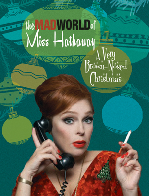

past performance |
|||
|
The Mad World of Miss Hathaway: A Very Brown Nose Christmas The original musical parody of Mad Men, The Mad World of Miss Hathaway returns to the Wild Project! This madcap show celebrates the holiday season as only a Mad Men spoof can with unlimited amounts of booze, broads and bawdy good times. Who will get caught under the mistletoe with their ice-cold martini's up and pants down? Here's what people are saying about The Mad World of Miss Hathaway: “Angela Di Carlo's slap-happy horndog musical parody of Man Men, The Mad World of Miss Hathaway” (Lowbrow/Brilliant) |
 | ||
|
“30 Rock, The Simpsons, SNL...all have tried spoofing the quintessentially spoof-able show, but few of these efforts are as funny—or risque as The Mad World of Miss Hathaway” “An absolute scream! I sur-really loved it!” “Angela Di Carlo's Mad World of Miss Hathaway is a fantasia of unfettered musical genius. Come for the show and stay for the VSM (very strange medley) encores!” "The Mad World of Miss Hathaway is as smart and addictive as the great TV series that inspired it. Angela (aka Miss Hathaway) and her company are fabulous! GO MAD!" |
|||
upcoming performances |
|||
 |
|||
| EVQ Film Festival 2018 August 20-25 |
|||
performance archives |
|||
| 2018 | 2017 | 2016 | 2015 |
| 2014 | 2013 | 2012 | 2011 |
| 2010 | 2009 | 2008 | 2007 |